MC1.20.x Mekanismの手引き1
はじめに
Minecraft 1.20.xでMekanismをやるときはとても難しいと思うでしょう。でも、それぞれ紐解くと簡単なので、解説していきます。
目次
0.注意と前提解説とおすすめmod紹介
1.主要な追加ブロック・鉱石
2.Mekanism始動
3.初めての加工機械
4.工業の時代へ…
5.電力安定を目指して
さいごに
0.注意と前提解説とおすすめmod紹介
○modは基本4つ入れる
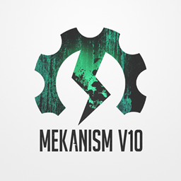
★Mekanism
Mekanism ModはまずMekanism本体がないと始まりません。まずこれを入れましょう。
Mekanism modというのはMekanism単体を入れればいいのではありません。
Mekanism本体はただのコア、いわば心臓部ってだけで、これだけでは何にも面白くありません。
これを肉付けする3つのmodがこれらです。
☆Mekanism Generators
Mekanismの電力を生み出すための、発電機となるブロックを追加するmodです。
電力がなければMekanism機械は動かないので、実質このmodがないとMekanismはできないので絶対入れましょう。
☆Mekanism Tools
Mekanismの鉱石やインゴットで作れる防具やツールmodです。
正直これはMekanismやるだけならいらないけど、あったほうがツールの選択肢やバリエーションが増えて圧倒的に楽しいので入れましょう。
☆Mekanism Additions
Mekanismの追加素材や機能を追加するmodです。
これも正直Mekanismやるだけならいらないけど、あったほうが建築の選択肢や使い道があまりない素材を有効活用できることがあるので入れましょう。
○これは必須じゃないけど、入れたほうがいいmodたち
・Just Enough Items(通称JEI)
これはMinecraftにあるクラフトを色々な機能で補助するためのmodです。
これがあるとMekanismの複雑なクラフトがめちゃくちゃ楽になるので、入れるのをお勧めします。
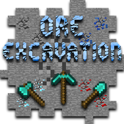
・Ore Excavation
Ore Excavationは、様々なものに対応する一括破壊modです。
ただ一括で破壊するだけでなく、掘り抜く形を切り替えることもできます。
Mekanismはバニラ鉱石、追加鉱石の両方が大量に必要なので、ブランチマイニングのためにも入れるのをお勧めします。
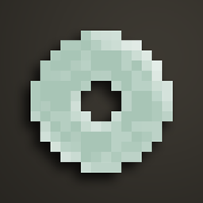
・Jade
Jadeは、ブロックやモブの情報を表示するためのmodです。
バニラのかまどなど、使えるブロックに入ってる物やその数、そして加工の進捗だけでなく、
Mekanismの機械の中にある電気や入っているものとその量、加工の進捗が見れるので入れるのをお勧めします。
ほぼチートmod(バランス崩壊するかもだからあんまおすすめしない)(クリックして開く)
これらのmodはゲームバランスを崩す可能性があるため、使用する際は注意が必要です。
・Advanced XRay
Advanced XRayは、事前に設定したブロックを表示することができるmodで、いわゆるX-Rayです。
これがあると、どんな鉱石やブロックも簡単に見つけられます。だけどそれだと逆に簡単すぎるため、私はお勧めしません。
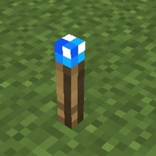
・Torcherino
Torcherinoは、事前に設定した範囲のTick速度を早くするmodです。
これがあると、農作物の成長や加工速度の上昇、発電速度の上昇が可能になります。だけど超バランスブレイカーなので私はお勧めしません。
○よく出るものの解説
この手引きでのよく出るものを書いておきます。いちいち書くのが面倒だったのです。
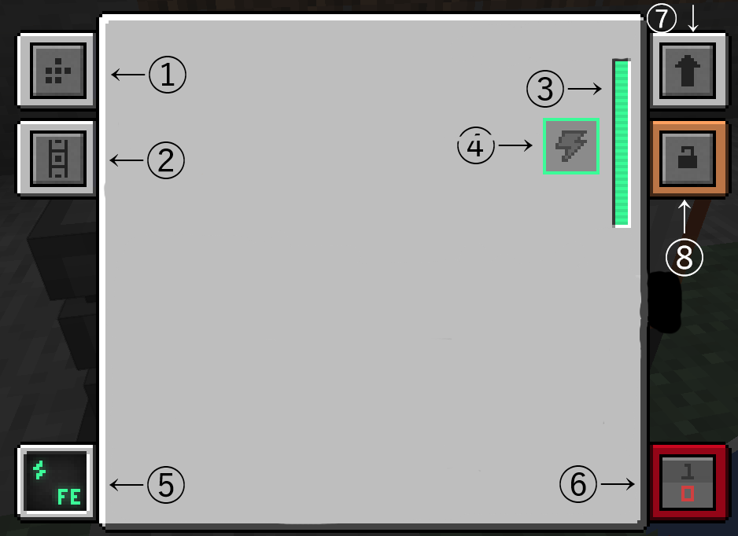
①は側面にあるブロックとの関係の設定ができるボタンです。様々な設定ができます。
②は搬入の設定ができるボタンです。精密な設定ができます。
③は機械に入っているエネルギーの量を示すゲージです。その量は機械の種類やグレードに応じて変わります。
④はエネルギータブレットにエネルギーを入れたり出したりできる場所です。加工機械ならふつうエネルギーを入れる場所、発電機ならふつう充電する場所です。
⑤は機械の電力に関する情報を表示する場所です。クリックで単位を変えられて、加工機械と発電機で見れる情報が変わります。
⑥はボタンはレッドストーン制御に関するもので、
無視の場合はレッドストーン信号の影響を受けず、通常だとレッドストーン信号を与えると動き、反転だと逆にレッドストーン信号を止めると動きます。
⑦はアップグレードに関するボタンで、ここからアップグレードパーツを入れられます。
⑧は機械をロックするためのボタンで、マルチプレイするときに役立ちます。
1.主要な追加ブロック・鉱石
Mekanismでは新種の鉱石が数種類追加されます。
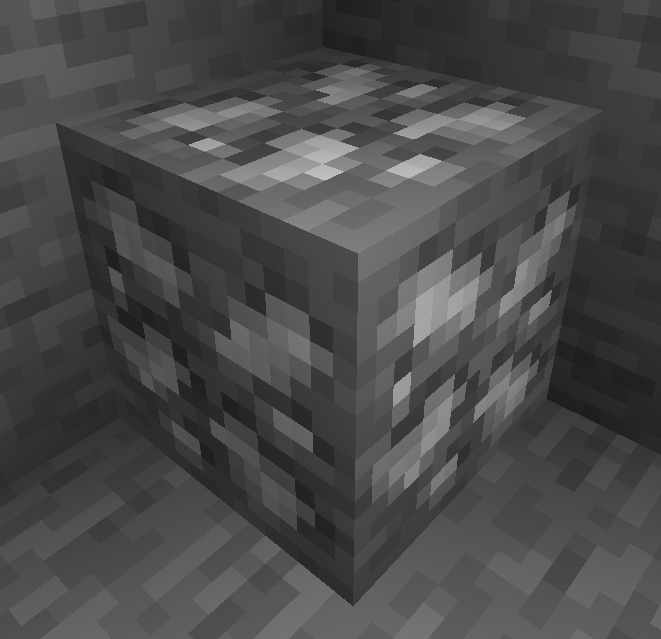
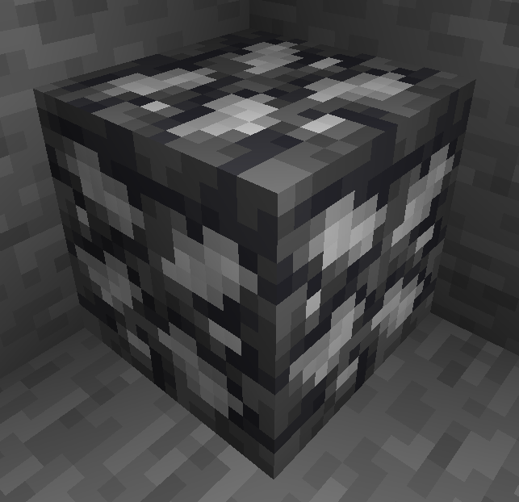
○錫鉱石
Mekanismで追加されるy=60以下に生成される鉱石です。
正直そんな使うとこはないので、見かけたら取っておくくらいでOKです。
石以上のツールで採掘可能です。
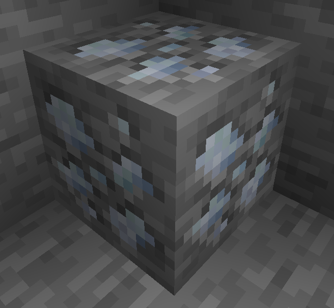
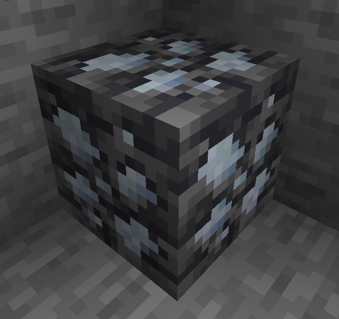
○オスミウム鉱石
Mekanismで追加されるy=60以下に生成される鉱石です。
重要で、よくつかうので見かけたら取っておきましょう。
石以上のツールで採掘可能です。
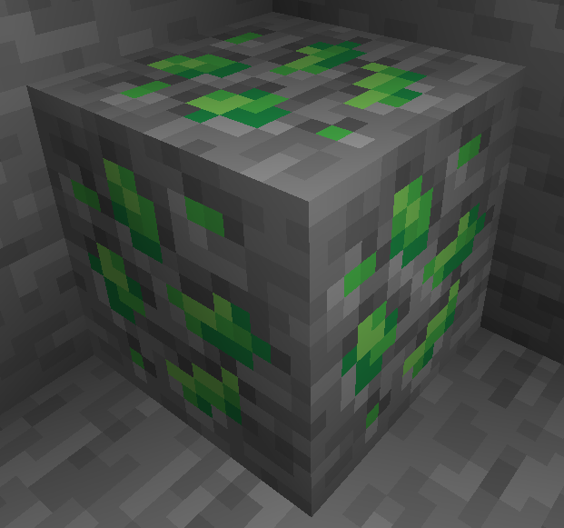
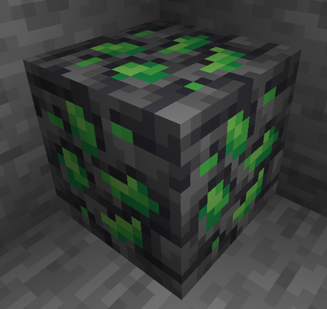
○ウラン鉱石
Mekanismで追加される鉱石です。核分裂燃料の素材になります。
最後のほうでめっちゃ使うので見かけたら取っておきましょう。
石以上のツールで採掘可能です。
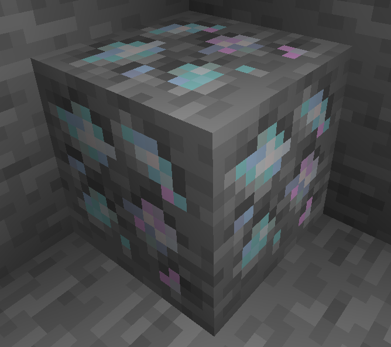
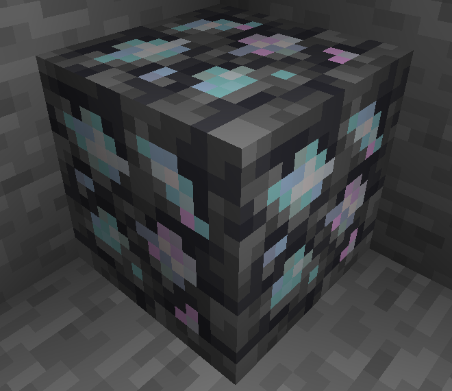
○蛍石鉱石
Mekanismで追加される鉱石です。ウランと同じく核分裂燃料の素材になります。
1つのブロックからラピスラズリやレッドストーンのように複数の鉱石が取れます。見かけたら取っておきましょう。
石以上のツールで採掘可能です。
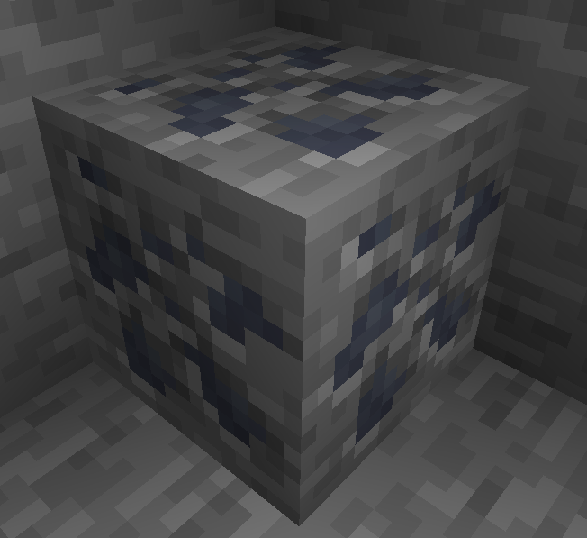
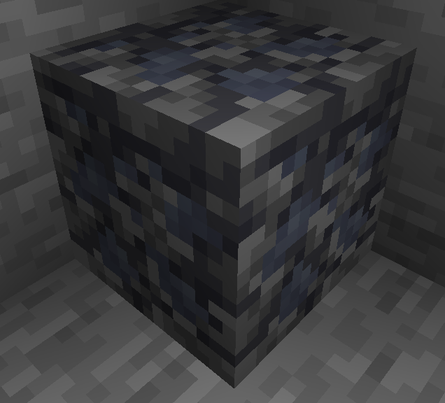
○鉛鉱石
Mekanismで追加される鉱石です。エンドコンテンツの時に使います。
これもエンドコンテンツで大量に使うことになるので、見かけたら取っておきましょう。
石以上のツールで採掘可能です。
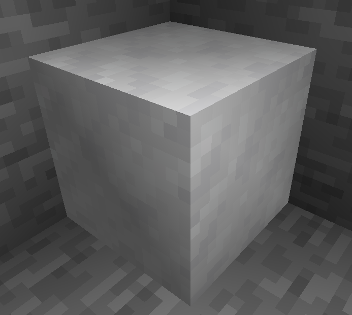
○塩ブロック
Mekanismで追加されるブロックです。水辺に生成されて壊すと塩をドロップします。
割とマジでどこにでもあるので、気が向いたら取りに行くくらいでOKです。
素手以上で採掘可能です。
余談
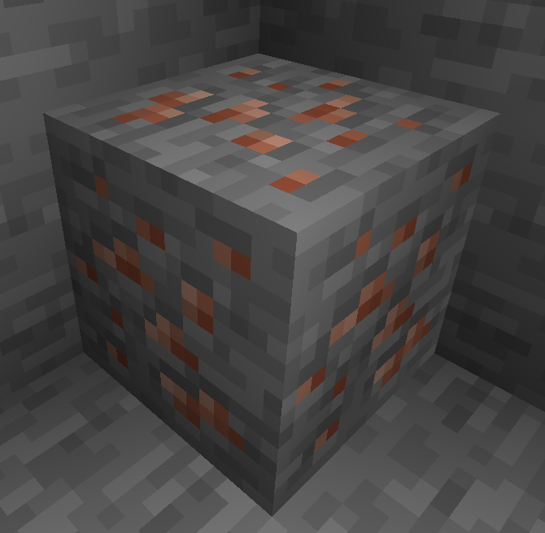
○銅鉱石
Mekanismで追加されていた鉱石ですが、バニラの銅鉱石と統合されました。
石以上のツールで採掘可能でした。
2.Mekanism始動
Mekanismはワールド作ってかまどとかいろいろ作るまでは基本バニラとは変わりません。
石のツルハシとかまどを作り終わったら、地下を掘りましょう。Mekanismではバニラと変わらず地中に鉱石が生成されます。
鉄インゴット、銅インゴット、オスミウムインゴット、木材、かまどを満足いくまで集めましょう。
集め終わったら、それらの素材をこの画像の通りにクラフトすることで、初めての手ごろな発電機「熱発電機」が完成します。
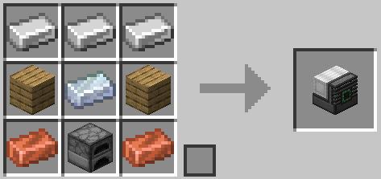
上段全てに鉄インゴット
中段左右に木材、中段中央にオスミウムインゴット
下段左右に銅インゴット、下段中央にかまど
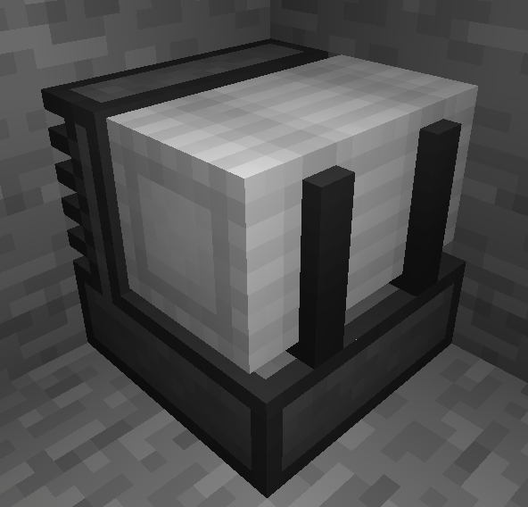
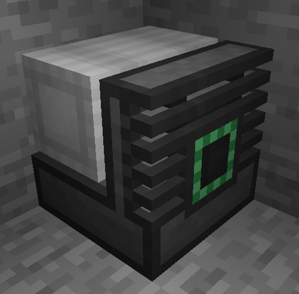
○熱発電機
熱発電機は、簡単な素材で序盤から作れる発電機です。
壊してもブロック化しますし、中身のものや電力は保持されます。
序盤の発電機としてはかなり有能ですが、発電効率に対するコスパが悪いので中盤を超えるとあまり使われなくなります。
使い方1
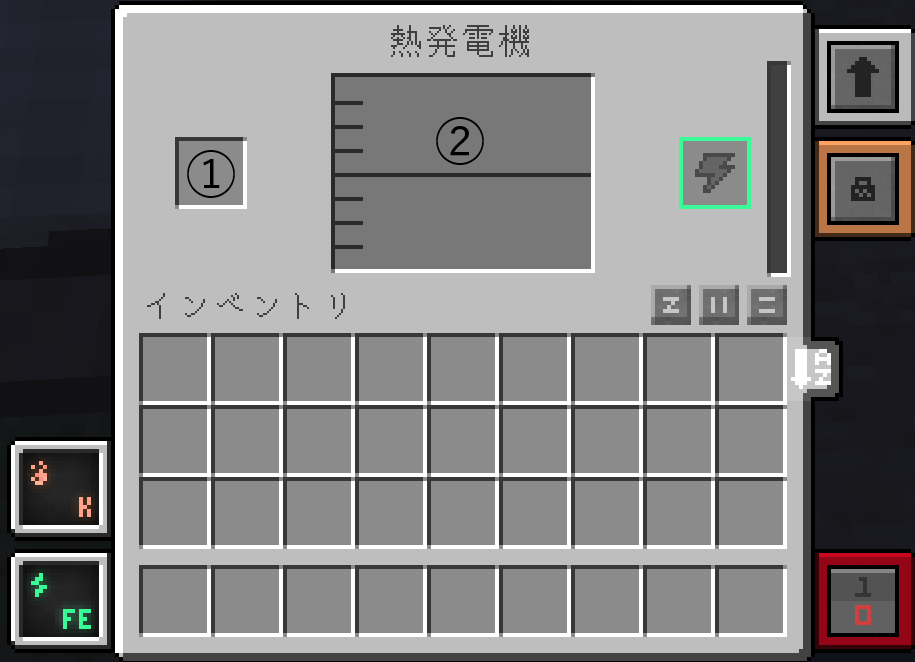
①の場所に溶岩バケツなどのかまどで燃料になるアイテム・ブロックを入れることで②のゲージに溶岩が表示され、その溶岩が一定以上の量になったら発電し始めます。
発電した電気は電気ケーブルで取り出せます。
①の場所には溶岩タンクを直入れしても問題はありません。液体パイプを使って外部から燃料を供給してもOKです。
使い方2
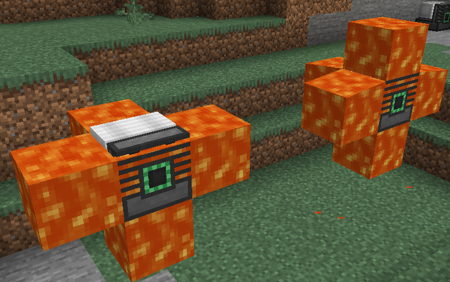
右の形のように、熱発電機のパイプなどを通せる面を除いた周り+熱発電機内に溶岩源を置くことでも発電できます。
どうやら熱発電機ブロックには重ねて溶岩を入れられるみたいです。
でも個人的には左の形のような方法が一番いいと思っています。
3.初めての加工機械
発電機ができたら次は加工機械を作りましょう。
鉄インゴット、銅インゴット、オスミウムインゴット、木材、かまどを満足いくまで集めましょう。
それらの素材をこの画像の通りに作業台でクラフトすることで、初めての加工機械「冶金吹込機」が完成します。
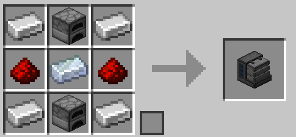
上段左右に鉄インゴット、上段中央にかまど
中段左右にレッドストーン、中段中央にオスミウムインゴット
下段左右に鉄インゴット、下段中央にかまど
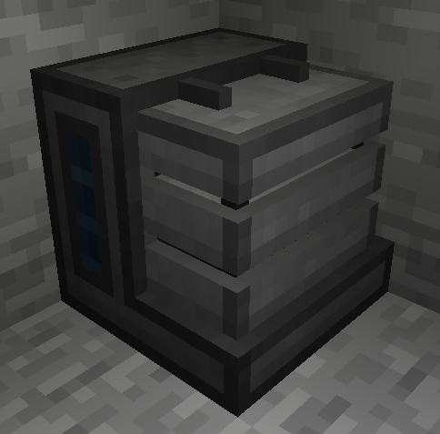
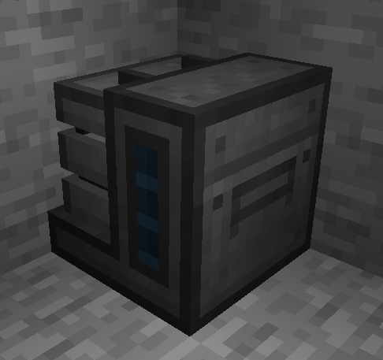
○冶金吹込機
冶金吹込機は、最序盤から作れる加工機械です。
壊してもブロック化しますし、中身のものや電力は保持されます。
最序盤で作れる割にMekanism最重要で、この機械がないと数々の中間素材がすべて作れなくなるので絶対に作りましょう。
使い方
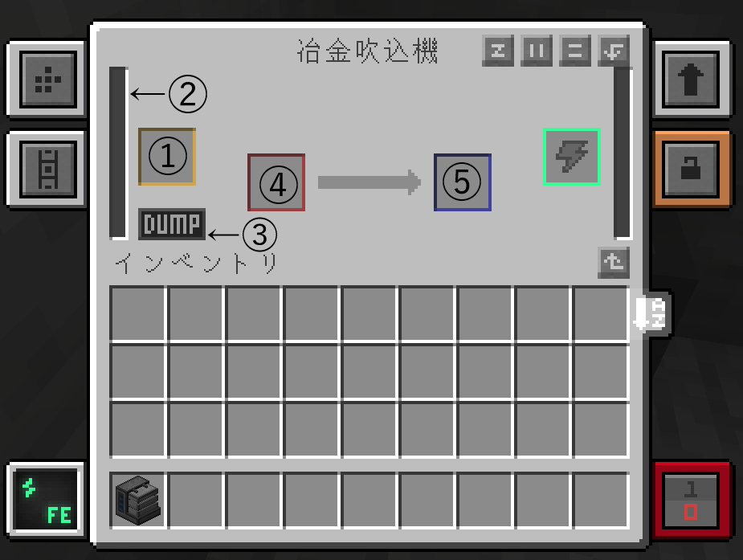
①の場所に指定された吹込む素材を入れることで②のゲージに吹込む素材が表示され、その状態で指定された物を④の場所に置くことで加工が始まります。加工が終わると⑤に加工品が表示されます。
③のボタンを押すと吹込む素材がすべて排出されてしまうため、注意が必要です。
これを筆頭とした加工機械は電力を必要とするので、発電機と接続しましょう。ケーブルがないうちは発電機に直接おいてOKですが、発電機のいかにもケーブルが取り付けられそうな面に置く必要があります。
4.工業の時代へ…
冶金吹込機ができたら、次は工業の時代へと入っていきます。
それに行く過程で必須なのは鋼鉄インゴットなので、今から作っていきましょう。
鉄と石炭(木炭でもOK)を満足するまで集めましょう。
集め終わったら、冶金吹込機で石炭1つを鉄に吹込むことで濃縮鉄ができます。
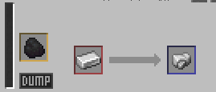
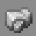
○濃縮鉄
濃縮鉄は、冶金吹込機で作れる中間素材です。
これは鋼鉄インゴットでないので、反応炉窓を作るでもないならさっさと冶金吹込機で加工しましょう。
終盤に中間素材として使うだけで、今は鋼鉄インゴットの中間素材でしかありません。
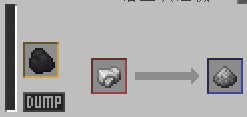
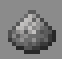
○鋼鉄の粉
鋼鉄の粉は、主に冶金吹込機で作れる中間素材です。
これも鋼鉄インゴットでないので、消音アップグレードを作るでもないならさっさとかまどで焼いてしまいましょう。
粉砕機で鋼鉄インゴットを粉砕することでも作れます。
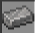
○鋼鉄インゴット
鋼鉄インゴットは、かまどで作れる中間素材です。
Mekanismで最重要の素材であり、多くの機械を作る中間素材になりますし、Mekanism Toolsで追加される装備の素材としても使えます。
それに伴って結構量がいるので、こまめに作っておきましょう。
鋼鉄を作るための累計素材量は石炭2つ、鉄1つです。
他の中間素材も作っておきましょう。
鉄とレッドストーンを満足するまで集めましょう。
集め終わったら、冶金吹込機でレッドストーン1つを鉄に吹込むことで吹込合金ができます。
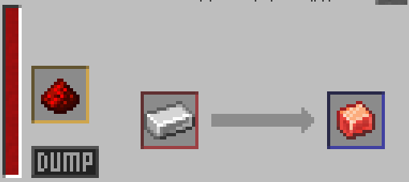
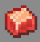
○吹込合金
吹込合金は、冶金吹込機で作れる中間素材です。
Mekanismで重要な素材であり、多くの機械を作る中間素材になりますし、機械だけじゃなくMekanismで追加されたツールや装備、アップグレードパーツ、
またほかのアイテムの中間素材などその用途は多岐にわたります。
それに伴って結構量がいるので、こまめに作っておきましょう。
また、オスミウムとレッドストーンを満足するまで集めましょう。
集め終わったら、冶金吹込機でレッドストーン2つをオスミウムに吹込むことで基本制御回路ができます。
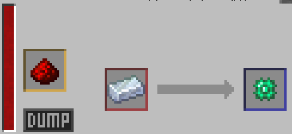
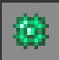
○基本制御回路
基本制御回路は、冶金吹込機で作れる中間素材です。
これもMekanismで重要な素材であり、多くの機械を作る中間素材になりますし、機械だけじゃなくMekanismで追加されたツールや装備、アップグレードパーツ、
またほかのアイテムの中間素材などその用途は多岐にわたります。
それに伴って結構量がいるので、こまめに作っておきましょう。
電力を届けるケーブルを作っていきましょう。
鋼鉄インゴットとレッドストーンを満足するまで集めましょう。
集め終わったら、作業台で鋼鉄インゴット2つとレッドストーン1つをこの画像の通りにクラフトすることで、基本ユニバーサルケーブルができます。
基本ユニバーサルケーブルを作るための累計素材量は鋼、細かくして石炭4つ、鉄2つ、レッドストーン1つです。
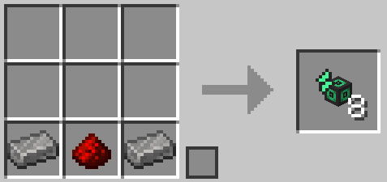
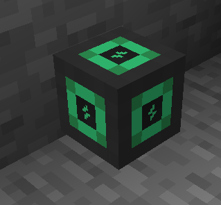
○基本ユニバーサルケーブル
基本ユニバーサルケーブルは、作業台で作れる中間素材です。
Mekanismで重要なケーブルで、発電機から加工機械へ電力を送るために使われます。
それに伴って結構量がいるので、こまめに作っておきましょう。
使い方
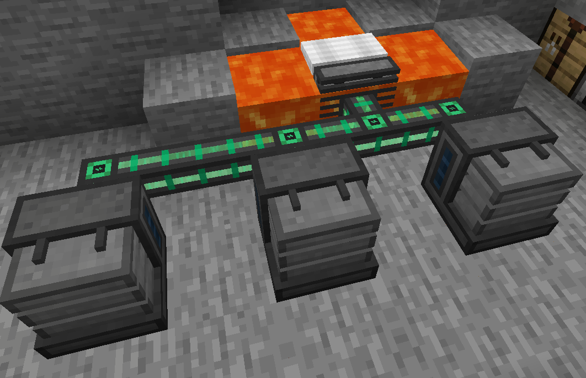
発電機のいかにもケーブルが取り付けられそうな面に置くことで、発電機から加工機械へ電力を送ることができます。何個も繋げたら遠くまで電力が届きますし、複数の機械を一度に動かせます。
どうやら溶岩の中においても使えるようです。
5.電力安定を目指して
工業の時代で電力不足は常に付きまとうものです。なので、これからを見据えて次は電力安定を目指していきましょう。
今回使うのはさっきの熱発電機でなく、風力発電機です。そちらのほうが発電効率に対するコスパが格段に良く、終盤まで利用できます。
その前に、風力発電機を作るための中間素材を作りましょう。
金とレッドストーンと吹込合金を満足するまで集めましょう。
集め終わったら、作業台で金インゴット3つとレッドストーン4つと吹込合金2つをこの画像の通りにクラフトすることで、エネルギータブレットができます。
エネルギータブレットを作るための累計素材量は、細かくしてレッドストーン6つ、金インゴット3つ、鉄インゴット2つです。
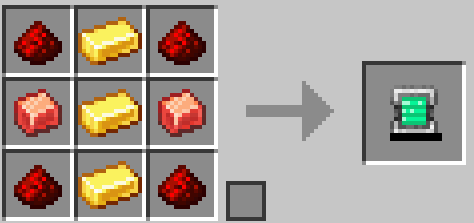
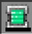
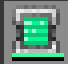
○エネルギータブレット
エネルギータブレットは、作業台で作れるアイテムです。
このアイテムの中に電力をためて加工機械に流すこともできますが、今回は風力発電機の中間素材として使います。
使い方
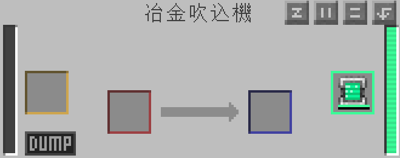
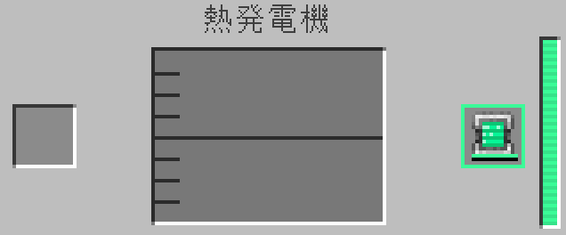
発電機GUIの④の場所にエネルギータブレットを置くことで、発電機からエネルギータブレットに電力をためることができます。
そして、加工機械GUIの④の場所にエネルギータブレットを置くことで、エネルギータブレットから加工機械に電力を流すことができます。
次に、本題である風力発電機を作ります。
オスミウムとエネルギータブレットと基本制御回路と吹込合金を満足するまで集めましょう。
集め終わったら、作業台でオスミウムインゴット3つとエネルギータブレット1つと基本制御回路1つと吹込合金2つをこの画像の通りにクラフトすることで、
主力級発電機の風力発電機ができます。
風力発電機を作るための累計素材量は、細かくしてレッドストーン13つ、金インゴット6つ、オスミウム4つ、鉄インゴット1つです。
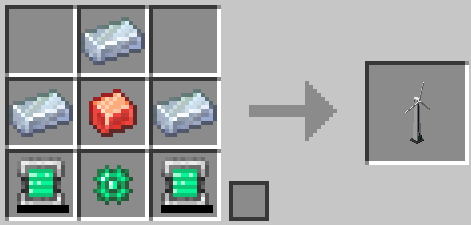
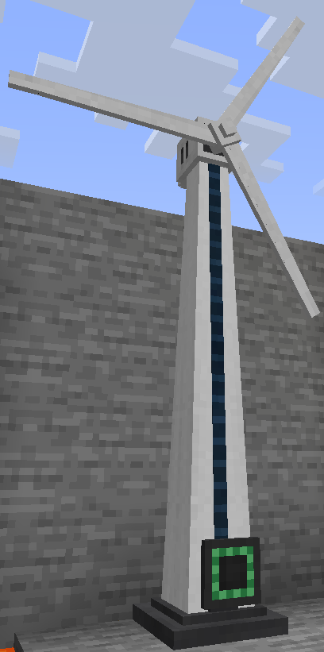
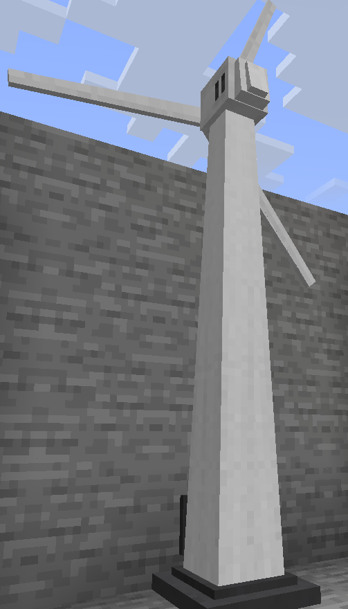
○風力発電機
風力発電機は、作業台で作れる機械です。
この機械はノーリソースで電力を発生させ、加工機械に電力を供給します。序盤から終盤まで使える優秀な発電機です。
使い方
普通に置いているだけで発電するので、ケーブルを使って発電した電力を送りましょう。高度が高ければ高いほど発電効率が上がるという仕様なので、できるだけ高い場所に設置しましょう。個人的にはy=300あたりに置いておくのがベストだと思っています。
これを10台くらい作れば、これから作る鉱石倍化装置を作っても問題ない電力量が生まれるので、中盤までの電力不足は解消されたといってもいいでしょう。
さいごに
これでMC1.20.xのMekanismの手引き1は終わりです。
これを読んでMekanismを始める人、Mekanismを楽しめる人が少しでも増えたら嬉しいです。
次回は、精製黒曜石までの道のりと基本的な機械、鉱石2倍化、3倍化装置、Mekanismのツール・装備たちを解説します。
次回もよろしくお願いします。
使用AIと余談
使用AI:
・ChatGPT
・Copilot
・GoogleAI
余談:これが初めてのHTMLとCSSだから変かも
製作期間:5日(04/04-04/08)
更新記録
2026/04/08:投稿
2026/04/09:スマホ対応